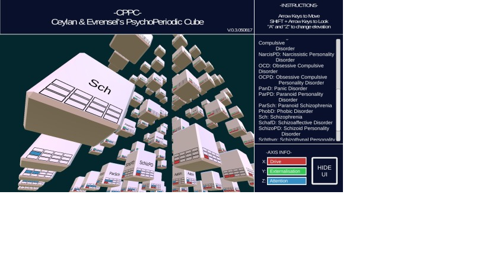

Portfolio
Academic Tools
I built research tools and heuristic algorithms for complex mathematical, financial, and psychological models.

Ant Colony Optimization
I wrote heuristic algorithms to solve complex mathematical and physical problems, often implementing novel approaches from academic research and comparing them with classical or brute-force methods. One C# project solves a modified travelling-salesman problem using remote visits. Another, written in Python, applies Ant Colony Optimization to financial asset purchases and sales using perfect price information over a year.
The Psychoperiodic Cube
This fractal-like cube represents psychological illnesses as numerical values across three axes: Drive, Externalization, and Attention. The Unity WebGL module lets users move in three dimensions through cubes representing currently known and potentially undiscovered diseases. I optimized and animated the experience, built custom canvas tools for a specialized render texture, and contributed to its interaction and gamification design.